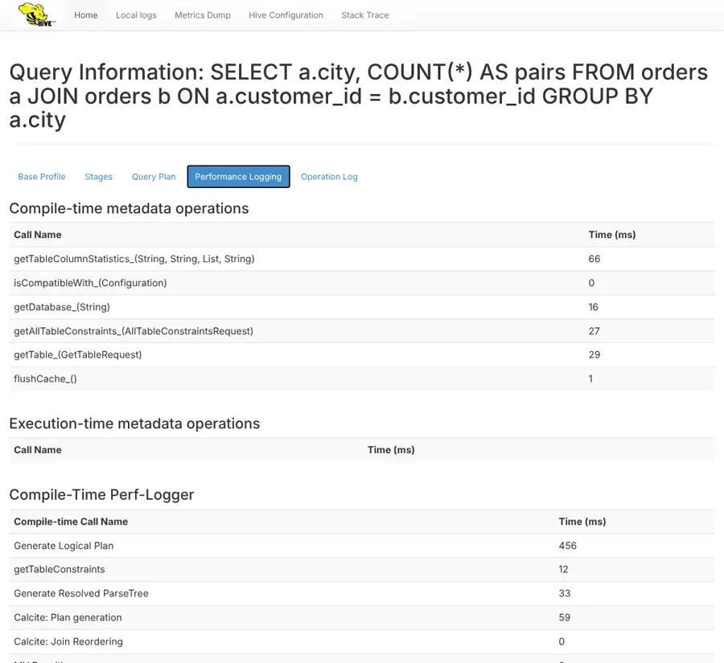

“Is Hive slow right now, or is it just my query?”
Monday, 10 a.m. Three analysts message Riya at once: queries are slow. Lesson 8.5 taught her to read one query’s plan and errors. Now she needs the view from the server: who is connected, what is running, how long things take, and where the logs are.
Sir, is there a dashboard for HiveServer2?
Every HiveServer2 has a small web UI on port 10002: live sessions and queries, a drilldown per query with timings, a metrics dump, the configuration and a thread dump. Behind it are metrics you can export to monitoring systems, and three kinds of logs: the server log, the per-query operation logs and the Tez task logs.
Then we just open it?
Open it and you will find, as we did, that metrics are off by default in this build, the plan tab needs a setting, the logs are full of background noise, and the metrics page showed our metastore password to anyone. All outputs and screenshots are real, from Hive 4.2.1.
Monitoring HiveServer2
Monitoring HiveServer2 combines its built-in web UI (port 10002 by default), which lists active sessions, open and recently closed queries with per-query drilldowns (profile, stages, plan, performance log, operation log) and exposes configuration, thread dumps and JMX metrics; metrics (enabled with hive.server2.metrics.enabled) such as open sessions, submitted, succeeded and failed queries and compilation and execution timers, published through JMX or JSON reporters; and logs: the server log, per-operation logs returned to clients and optionally kept as historic logs, and the execution engine’s task logs, all correlated by the query ID.
HiveServer2 has a web page that shows who is connected and what is running, numbers (metrics) that monitoring tools can collect, and logs that explain what happened to each query. Together they tell you whether the server, or one query, is the problem.
Words you’ll meet in this lesson
What to look at for which question
| Question | Look at | Lab example |
|---|---|---|
| Who is connected? What runs now? | Web UI home: Active Sessions, Open Queries | 1 session, 1 RUNNING query |
| Why was this query slow? | Drilldown: Performance Logging, Operation Log | compile 0.71 s, runTasks 3.2 s |
| Is the server getting worse over days? | Metrics: hs2_* counters and timers, charted | hs2_executing_queries mean 21 s |
| Why did it fail? | Operation log, server log by queryId, task logs | “interrupted after 39.983 seconds” |
| Is the server stuck? | /stacks thread dump, JVM memory in /jmx | 63–75 threads; heap 147 MB of 1 GB |
Monitoring at three levels
Beginner A car dashboard
- The web UI is HiveServer2’s dashboard: how many people are connected and which queries are running now.
- Metrics are the gauges: counts and timings you can chart over days.
- Logs are the trip recorder: what exactly happened, line by line, when something went wrong.
Intermediate Where each piece lives
- Web UI:
http://hs2-host:10002/(hive.server2.webui.port);/jmx,/conf,/stacks,/logs, drilldownquery_page.html?operationId=…. - Metrics:
hive.server2.metrics.enabled=true(andhive.metastore.metrics.enabled); reporters JMX and JSON file, scraped by Prometheus or similar. - Logs: HiveServer2 log (log4j2), operation logs streamed to Beeline (
hive.server2.logging.operation.level), historic operation logs, Tez/YARN task logs.
Advanced What the lab showed
- Without metrics enabled,
/jmxhad 27 JVM beans and nohs2_*; with them, 122 beans including session, query and compile timers. - The drilldown’s Performance Logging tab split a 3.9 s query into 0.71 s compile and 3.2 s execution; the Query Plan tab needed
hive.server2.webui.explain.output=true. /confhid the database password, but/jmxprinted it in the JVM arguments, with no login. Operation level VERBOSE sent 253 log lines to Beeline vs 118 at EXECUTION.
Exam tip: “How do you monitor HiveServer2?” Use the HS2 web UI (port 10002) for live sessions and queries with drilldowns, enable metrics (hive.server2.metrics.enabled) and scrape JMX into a monitoring system (open sessions, failed queries, latency), and correlate logs by query ID across the HS2 log, operation logs and Tez/YARN logs. Secure the UI.
Monitoring settings (Hive 4.2.1 lab)
| Setting | Lab value | Purpose |
|---|---|---|
hive.server2.webui.port | 10002 | Web UI port (0 disables it) |
hive.server2.webui.max.historic.queries | 25 | Closed queries kept in the UI |
hive.server2.webui.explain.output | false | Show EXPLAIN in the Query Plan tab |
hive.server2.metrics.enabled | false (we set true) | Publish hs2_* metrics |
hive.server2.logging.operation.level | EXECUTION | NONE · EXECUTION · PERFORMANCE · VERBOSE |
hive.server2.historic.operation.log.enabled | false (we set true) | Keep operation logs after a query |
hive.server2.webui.use.spnego / use.pam / use.ssl | false | Protect the web UI |
hive.conf.hidden.list | passwords … | Values hidden from /conf and SET |
The web UI and /jmx have no login unless you enable SPNEGO or PAM, and they reveal queries, users and configuration. In our lab /jmx even showed the metastore password, because it was passed as a -D JVM argument. Restrict port 10002 to administrators, and keep secrets in hive-site.xml or a credential provider, never on the command line.
A morning with the HiveServer2 web UI, metrics and logs
All outputs are real, from Hive 4.2.1. The lab maps HiveServer2’s port 10002 to the host; screenshots were taken with a headless browser.


Step 1 · Who is connected, and what is running?
The home page lists active sessions (user, IP, operation count, active and idle time), open queries with state and a drilldown link, and the last 25 closed queries (-- while SELECT COUNT(*) FROM orders_big_txt a JOIN orders_big_txt b … was runningActive Sessions User Name IP Address Operation Count Active Time (s) Idle Time (s) hive 127.0.0.1 1 17 16 Total number of sessions: 1 Open Queries User Name Query Execution Engine State Opened Timestamp Opened (s) Latency (s) Drilldown Link hive SELECT COUNT(*) FROM orders_big_txt a JOIN orders_big_txt b ON a.customer_id = b.customer_id tez RUNNING Thu Oct 29 13:23:07 GMT 2026 16 Not finished Drilldown Total number of queries: 1 Last Max 25 Closed Queries User Name Query Execution Engine State Opened (s) Closed Timestamp Latency (s) Drilldown Link hive SELECT a.city, COUNT(*) AS pairs FROM orders a JOIN orders b ON a.customer_id = b.customer_id GROUP BY a.city tez FINISHED 4 Thu Oct 29 13:22:47 GMT 2026 3 Drilldown hive SELECT * FROM no_such_table tez ERROR 0 Thu Oct 29 13:22:38 GMT 2026 0 Drilldown hive SELECT city, COUNT(*) FROM customers GROUP BY city tez FINISHED 1 Thu Oct 29 13:22:33 GMT 2026 1 Drilldown hive SELECT COUNT(*) FROM orders tez FINISHED 6 Thu Oct 29 13:22:32 GMT 2026 6 Drilldown Total number of queries: 4hive.server2.webui.max.historic.queries) with their final state: FINISHED, ERROR, and later TIMEDOUT for our self-join, which hit a 40-second query timeout. This list lives in memory and is empty after a restart.Step 2 · Drill into one query
The 3.9-second query spent 0.71 s compiling (702 ms semantic analysis, of which Calcite join-ordering transformations took about 360 ms) and 3.2 s running tasks. The first rows are metastore calls during compilation (getTable 29 ms, column statistics 66 ms). This tab answers “was it planning or execution?” without reading any log. The Stages tab labelled the Tez stage-- SELECT a.city, COUNT(*) AS pairs FROM orders a JOIN orders b ON … GROUP BY a.citygetTableColumnStatistics_(String, String, List, String) 66 ms getTable_(GetTableRequest) 29 ms Calcite: Plan generation 59 ms Calcite: Prejoin ordering transformation 168 ms compile 710 ms Physical Optimization 98 ms parse 2 ms semanticAnalyze 702 ms TezCompiler 48 ms Calcite: Postjoin ordering transformation 191 ms runTasks 3200 ms Driver.execute 3201 msStage-1:MAPRED, an old name; the Query Plan tab said “Set configuration hive.server2.webui.explain.output to true to view future query plans”.Step 3 · Metrics are off until you switch them on
With the defaults of this image,curl -s http://localhost:10002/jmx # default configuration # restart HiveServer2 with -Dhive.server2.metrics.enabled=true curl -s http://localhost:10002/jmx # 122 beans nowbeans: 27 java.lang:type=Memory HeapMemoryUsage used = 147 MB of max 1024 MB hs2_* beans: 0/jmxhad only 27 JVM beans (heap 147 MB of 1,024 MB, garbage collection, threads) and no hs2_* metrics. After enablinghive.server2.metrics.enabledit published 122 beans, including HiveServer2’s own counters and timers. Most tutorials show the metric names but not that they may be disabled.Step 4 · The numbers after a small workload
Counters (# workload: 3 successful queries, 1 error (no_such_table), 1 query timed out after 40 s curl -s http://localhost:10002/jmx | python3 -c '…select hs2_* and api_* beans…'api_compile count=5 mean= 0.59 s max= 1.58 s api_hs2_sql_operation_PENDING count=5 mean= 0.00 s max= 0.00 s cumulative_connection_count count=4 hs2_active_sessions value=0 hs2_completed_sql_operation_ERROR count=1 hs2_completed_sql_operation_FINISHED count=3 hs2_executing_queries count=4 mean= 21.04 s max= 39.98 s hs2_failed_queries count=1 hs2_open_sessions value=0 hs2_sql_operation_active_user count=0 hs2_submitted_queries count=4 mean= 2.94 s max= 6.13 s hs2_succeeded_queries count=3 open_operations count=0 waiting_compile_ops count=0hs2_succeeded_queries 3,hs2_failed_queries 1,cumulative_connection_count 4), gauges (hs2_open_sessions 0now) and timers: compilation averaged 0.59 s (max 1.58 s); execution averaged 21 s, pulled up by the 40-second timeout. A monitoring system scrapes these every minute and alerts on trends: rising failures, rising compile time (often a metastore problem), too many open sessions.Step 5 · Operation logs: what Beeline receives
The INFO lines you see in Beeline (Lesson 8.4’s Tez summary, counters, Lesson 8.5’s errors) are the operation log. NONE sends nothing; EXECUTION is the default; VERBOSE doubled the volume to 253 lines. PERFORMANCE gave the same 118 lines as EXECUTION for this query. WithSET hive.server2.logging.operation.level=NONE; -- then EXECUTION, PERFORMANCE, VERBOSE SELECT city, COUNT(*) FROM customers GROUP BY city;operation.level=NONE log lines sent to Beeline: 0 operation.level=EXECUTION log lines sent to Beeline: 118 operation.level=PERFORMANCE log lines sent to Beeline: 118 operation.level=VERBOSE log lines sent to Beeline: 253hive.server2.historic.operation.log.enabled=truethe server keeps a copy after the query ends.Step 6 · Follow one query through the server log
The query ID ties everything together: compile (0.466 s), execute, the Tez DAG and application ID, and the end, “interrupted after 39.983 seconds” (our query timeout). The historic operation log on disk ends with “FAILED: Operation cancelled”. In this Docker image the server log goes to the console (the UI’s Local logs page returned 404); on clusters it is a file such asdocker logs hiveserver2 | grep 'hive_20261029132307_55f4dbc1-…' # in our Docker lab: stdout # the kept (historic) operation log of the same query, last lines: tail -2 /tmp/hive/operation_logs_historic/…/hive_20261029132307_55f4dbc1-…13:23:07 INFO [Thread-321] ql.Driver: Compiling command(queryId=hive_20261029132307_55f4dbc1-e79b-48bd-8757-20647193bf39): SELECT COUNT(*) FROM orders_big_txt a JOIN orde 13:23:07 INFO [Thread-321] ql.Driver: Completed compiling command(queryId=hive_20261029132307_55f4dbc1-e79b-48bd-8757-20647193bf39); Time taken: 0.466 seconds 13:23:07 INFO [Thread-323] ql.Driver: Executing command(queryId=hive_20261029132307_55f4dbc1-e79b-48bd-8757-20647193bf39): SELECT COUNT(*) FROM orders_big_txt a JOIN orde 13:23:08 INFO [Thread-323] client.TezClient: Submitting dag to TezSession, sessionName=HIVE-325849df-6e49-44c6-9007-d54eb060e669, applicationId=application_1793280187938_ 13:23:08 INFO [Thread-323] tez.TezTask: HS2 Host: [4b97215477de], Query ID: [hive_20261029132307_55f4dbc1-e79b-48bd-8757-20647193bf39], Dag ID: [dag_1793280187938_0001_1] 13:23:47 INFO [Thread-323] ql.Driver: Executing command(queryId=hive_20261029132307_55f4dbc1-e79b-48bd-8757-20647193bf39) has been interrupted after 39.983 seconds ERROR : FAILED: Operation cancelled INFO : Executing command(queryId=hive_20261029132307_55f4dbc1-e79b-48bd-8757-20647193bf39) has been interrupted after 39.983 seconds/var/log/hive/hiveserver2.log.Step 7 · Noise, and how to cut through it
In a few minutes the server log had 4,585 lines, including a compaction worker announcing every ~11 seconds that it had nothing to do (Module 7’s compactor running inside HiveServer2). Only 32 lines belonged to the query we cared about. Search by query ID or session ID, ship logs to a central system (ELK, Splunk, Loki), and tune noisy loggers through the UI’s Configure logging page or log4j2.docker logs hiveserver2 | wc -l docker logs hiveserver2 | grep -c 'compactor.Worker: Processing compaction request null' docker logs hiveserver2 | grep -c 'hive_20261029132307_55f4dbc1-…'total log lines: 4585 · compactor.Worker lines: 21 · lines with this queryId: 32Step 8 · What the UI reveals: a security check
The configuration page correctly hides the metastore password (curl -s http://localhost:10002/conf | grep -c hivepw # the configuration page curl -s http://localhost:10002/conf | grep hive.conf.hidden.list curl -s http://localhost:10002/jmx | … Runtime InputArguments … # the metrics page-- /conf page: is the metastore password shown? occurrences of the real password: 0 hive.conf.hidden.list=javax.jdo.option.ConnectionPassword,hive.server2.keystore.password,hive.server2.webui.keystore.password,hive.druid.metadata.password,fs.s3 … $ curl -s http://localhost:10002/jmx # no login needed bean java.lang:type=Runtime, InputArguments ( 35 items), matching *Password*: -Djavax.jdo.option.ConnectionPassword=hivepwhive.conf.hidden.list). But the metastore password reached HiveServer2 as a-DJVM argument, and/jmxlists all JVM arguments: anyone who can open port 10002 can read it. Fix: keep secrets inhive-site.xmlor a Hadoop credential provider (hadoop.security.credential.provider.path), enable SPNEGO/PAM and TLS on the UI, and firewall the port.
Now, trends and details
Left: real outputs. Right: what each monitoring layer tells you.
- The home page showed a running query and recent ones.
- The drilldown split a query into compile and run time.
- Metrics appeared only after enabling them.
- One query ID found 32 relevant lines among thousands.
- /jmx exposed a password that /conf hid.
- HiveServer2 keeps live and recent operations in memory.
- The perf logger times every phase of each query.
- Metric reporters publish counters and timers through JMX.
- Every log line of a query carries its ID.
- JMX lists JVM arguments verbatim.
Three live scenarios follow: server triage, a metrics dashboard, and locking down the UI.
Real-time scenario 1Is it the server or one user?
A typical triage with the web UI. (Numbers illustrative; pages as in our lab.)
- Users report slowness.
- Open Queries reveals a runaway job.
- Drilldown shows where time goes.
- Kill and inform.
- Alert next time.
A monitoring dashboard for Hive
Turning metrics into dashboards and alerts. (Typical setup; metric names from our lab.)
- The team needs a dashboard.
- Enable metrics and scrape JMX.
- Chart the key series.
- Alert on real problems.
- Include the metastore.
Locking down the web UI
Remediating the exposure we found. (Typical hardening steps.)
- The UI is open to everyone.
- Move secrets out of -D flags.
- Require authentication and TLS.
- Restrict network access.
- Test again from outside.
Monitoring at work
1. On-call triage
The web UI’s open queries and drilldowns are the first stop when users report slowness.
2. Service levels
Query success rate and latency percentiles from metrics are reported against agreed service levels.
3. Capacity planning
Trends in sessions, concurrent queries and heap use show when to add HiveServer2 instances.
4. Central log search
HiveServer2, metastore and Tez logs are shipped to ELK, Splunk or Loki and searched by query ID.
5. Security reviews
Monitoring endpoints are checked in security scans, since they reveal queries, users and configuration.
Examples are simplified.
Run the code: from metrics to alerts
These programs turn the lab’s metrics and logs into the checks a monitoring system runs. Press Run, then try the challenges.
# Read HiveServer2 metrics like a monitoring system (values from the lab)
metrics = {"hs2_succeeded_queries": 3, "hs2_failed_queries": 1, "hs2_open_sessions": 0,
"api_compile_mean_s": 0.59, "hs2_executing_queries_mean_s": 21.04}
total = metrics["hs2_succeeded_queries"] + metrics["hs2_failed_queries"]
failure_rate = metrics["hs2_failed_queries"] / total
print(f"queries: {total}, failure rate: {failure_rate:.0%}")
alerts = []
if failure_rate > 0.05:
alerts.append("failure rate above 5%")
if metrics["api_compile_mean_s"] > 2:
alerts.append("slow compilation: check the metastore")
print("alerts:", alerts or "none")failure_rate = metrics["hs2_failed_queries"] / totalCounters only grow; real systems compare increases over a time window, not totals since start.if metrics["api_compile_mean_s"] > 2:Rising compile time often points at the metastore (Lesson 10.1), not the cluster.
Run on your PC: query profile, stages and threads
More pages of the HiveServer2 web UI in our lab. Outputs are real.
1 · Base Profile of a query
http://localhost:10002/query_page.html?operationId=… (Base Profile tab)The query ID here is the same key used in the logs and in Tez. “Opened” is the time since the operation was opened; “Latency” is execution time.
2 · Stages and Query Plan tabs
Stages tab · Query Plan tabThe Tez stage is still labelled MAPRED. To see plans here, set hive.server2.webui.explain.output=true (it applies to future queries).
3 · Thread dump
curl -s http://localhost:10002/stacks | head
# most frequent thread namesWhen HiveServer2 hangs, two thread dumps a few seconds apart show which threads are stuck and where (for example waiting on the metastore). Our idle server had about 60 threads.
One query through the monitoring layers
Follow the timed-out self-join through the UI, metrics and logs.
Worked examples: real problems, solved and traced in memory
Three monitoring tasks from real platform teams.
Read the home page
Problem statement
From the web UI home page, decide whether the problem is the server or one query.
1 active session, 1 open query RUNNING for 16 s, recent queries 1–6 s
looks normal
Approach
- Few sessions and queries → server not overloaded.
- One long query → drill into it.
- Many queries from one user → runaway job.
Solution: run it live
What happens in memory, step by step
Recorded from a real Python run: press Next to execute one line at a time. Watch variables change in each frame, and lists and dictionaries (numbered #1, #2 …) fill up as objects.
Choose what to chart
Problem statement
Pick six series for a HiveServer2 dashboard and the reason for each.
metric names from /jmx in the lab
hs2_open_sessions connection load hs2_executing_queries (count) concurrency hs2_failed_queries (rate) errors api_compile (p95) planning / metastore health hs2_executing_queries (p95) user-facing latency java.lang:Memory HeapMemoryUsage memory pressure
Approach
- Load: sessions and executing queries.
- Health: failures.
- Latency: compile and execution timers.
Solution: run it live
What happens in memory, step by step
Recorded from a real Python run: press Next to execute one line at a time. Watch variables change in each frame, and lists and dictionaries (numbered #1, #2 …) fill up as objects.
Audit monitoring endpoints
Problem statement
List the checks for a HiveServer2 security review of port 10002.
findings from Step 8
FAIL UI requires login (SPNEGO/PAM) FAIL no passwords in -D JVM arguments PASS /conf hides secrets (hive.conf.hidden.list) FAIL TLS on the UI FAIL port 10002 reachable only from admin/monitoring hosts
Approach
- Authentication on the UI.
- No secrets in JVM arguments.
- Network restrictions and TLS.
Solution: run it live
What happens in memory, step by step
Recorded from a real Python run: press Next to execute one line at a time. Watch variables change in each frame, and lists and dictionaries (numbered #1, #2 …) fill up as objects.
Check yourself
Quick revision
Lesson 10.3 in one screen
- Web UI :10002: sessions, open queries, last 25 closed queries (in memory), drilldown per query.
- Drilldown tabs: Base Profile, Stages, Query Plan (needs
hive.server2.webui.explain.output= true), Performance Logging, Operation Log. - Metrics:
hive.server2.metrics.enabled= true → hs2_* counters, gauges, timers in/jmx(27 → 122 beans in lab). - Key series: open sessions, executing queries, failed rate, compile and execution percentiles, heap.
- Operation logs: operation log level (
hive.server2.logging.operation.level): NONE · EXECUTION · PERFORMANCE · VERBOSE; historic logs optional. - Server log: log4j2 (console in Docker, file on clusters); filter by query ID; ship centrally; tune noisy loggers.
/stacksfor hangs;/confhideshive.conf.hidden.listvalues.- Secure the UI (SPNEGO/PAM, TLS, firewall); never pass secrets as -D flags (/jmx showed one).
Interview and viva questions
Is there a metastore web UI?
Not like HiveServer2’s. The metastore publishes metrics through JMX when hive.metastore.metrics.enabled (or metastore.metrics.enabled) is true, and logs to its own log. Monitor its call latency and error counts, since every engine depends on it.
Where are Tez task logs?
On a YARN cluster: the YARN ResourceManager UI (port 8088) and yarn logs -applicationId application_…, or the Tez UI if installed. The application ID appears in the HiveServer2 log line “Submitting dag to TezSession … applicationId=…”. In our local-mode lab tasks log into HiveServer2’s own output.
How long are closed queries kept in the UI?
The last hive.server2.webui.max.historic.queries (25) operations, in memory only. For history, keep historic operation logs, central logs, or a distribution’s query history service.
Can I change log levels without a restart?
Yes: the UI’s “Configure logging” page and log4j2’s automatic reconfiguration let you raise a single logger (for example the metastore client) to DEBUG temporarily. Remember to set it back.
What about Prometheus?
Hive does not ship a Prometheus endpoint itself; teams use the JMX exporter agent on the HiveServer2 JVM, or scrape /jmx and convert. Managed services (Cloudera, cloud providers) export metrics to their own monitoring.
Practice problems
Programs for monitoring checks, with the commands in each explanation.
Compile share
What share of the query was compilation?
710 ms compile, 3,200 ms execution
18%
Show solution and explanation
print(f"{710 / (710 + 3200):.0%}")How it works: 18%: execution dominated, so plan reading (8.1) and execution tuning (8.4) are the next steps.
Signal to noise
What share of log lines belonged to our query?
32 of 4,585
0.70%
Show solution and explanation
print(f"{32 / 4585:.2%}")How it works: 0.70%: filter by query ID.
Bean growth
How many beans did enabling metrics add?
27 → 122
95
Show solution and explanation
print(122 - 27)How it works: 95 HiveServer2 metric beans: counters, gauges and timers.
Extract the query ID
Pull the query ID out of a log line.
a real log line
hive_20261029132307_55f4dbc1-e79b-48bd-8757-20647193bf39
Show solution and explanation
import re
line = "ql.Driver: Executing command(queryId=hive_20261029132307_55f4dbc1-e79b-48bd-8757-20647193bf39) has been interrupted after 39.983 seconds"
print(re.search(r"queryId=(hive_[0-9_a-f-]+)", line).group(1))How it works: Then: docker logs hiveserver2 | grep <id>, or search it in your log system.
Heap alert
Alert when heap use exceeds 85% of max.
147 MB of 1,024 MB
14% ok
Show solution and explanation
used, mx = 147, 1024
print(f"{used / mx:.0%}", "ALERT" if used / mx > 0.85 else "ok")How it works: From java.lang:type=Memory HeapMemoryUsage in /jmx.
Find secrets in arguments
Scan JVM arguments for anything password-like.
arguments list
['-Djavax.jdo.option.ConnectionPassword']
Show solution and explanation
args = ["-Xmx1G", "-Djavax.jdo.option.ConnectionPassword=hivepw", "-Dhive.server2.metrics.enabled=true"]
print([a.split("=")[0] for a in args if "password" in a.lower()])How it works: Print only the names, never the values, in reports.
Mean time to diagnose
Grepping files on 4 servers takes 20 minutes; central search takes 2. Saving over 30 incidents a year?
illustrative
9.0 hours per year
Show solution and explanation
print((20 - 2) * 30 / 60, "hours per year")How it works: 9 hours of on-call time, plus faster recovery for users.
Retention
Logs of 4,585 lines in a few minutes. Estimate daily lines for one server.
lab rate (illustrative extrapolation)
1320480 lines per day
Show solution and explanation
lines, minutes = 4585, 5
print(round(lines / minutes * 60 * 24), "lines per day")How it works: About 1.3 million lines a day from a nearly idle lab server: budget log storage and tune noisy loggers.
Real-world scenario questions (asked in company interviews)
Monitoring questions check whether you can find problems before users do.
“How do you see running Hive queries?”
Explain how to find what is running on HiveServer2.
The interviewer is checking: do you know the web UI and commands?
Show a strong answer
Open the HiveServer2 web UI on port 10002: it lists active sessions, open queries with state and elapsed time, and recent closed queries, each with a drilldown. From Beeline, Hive 4 also has SHOW PROCESSLIST, and KILL QUERY to stop one.
Avoid: Only mentioning YARN.
Users say Hive is slow
Several users report slowness at the same time.
The interviewer is checking: can you separate server and query problems?
Show a strong answer
- Web UI: count open queries and sessions; look for one user or job with many queries.
- Metrics: compare executing queries, compile time and heap with normal days.
- Drill into the slowest query (compile vs execute), then logs by query ID.
Avoid: Restarting HiveServer2 first.
Monitoring from zero
There is no monitoring for HiveServer2. What do you set up first?
The interviewer is checking: can you prioritise?
Show a strong answer
- Enable HiveServer2 and metastore metrics; scrape JMX; chart sessions, failures, latency, heap.
- Central logs with query IDs; alerts on failure rate and memory.
- Secure the web UI; remove secrets from JVM arguments.
Avoid: Only reading logs after complaints.
Observability for a shared platform
Design observability for Hive, the metastore and Tez on a 500-user platform.
The interviewer is checking: can you design end to end?
Show a strong answer
- Metrics: JMX exporters on HS2 and HMS, dashboards with percentiles, SLOs per user group.
- Logs: central search with query, session and application IDs; retention and noise control.
- Traces: query ID propagated to Tez/YARN; audit from Ranger; locked-down UIs.
Avoid: One dashboard with CPU only.